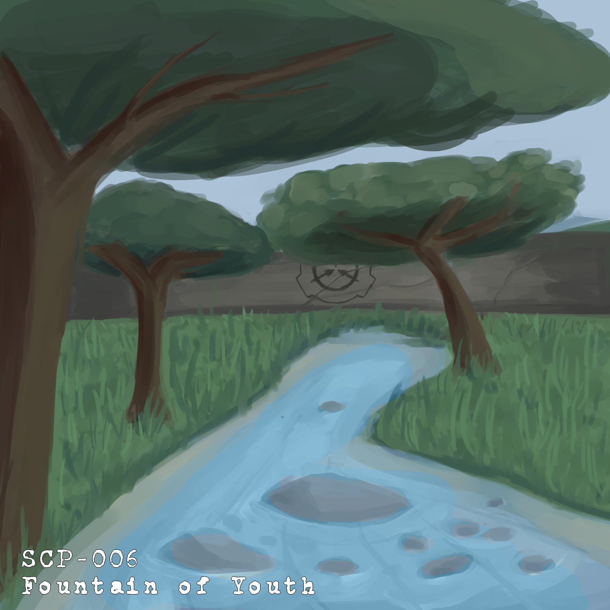

Item #: SCP-006
Object Class: Safe
Special Containment Procedures:
Whereas the nature of SCP-006 does not warrant any extensive containment, a certain level of secrecy is necessary regarding the object's existence and properties, for obvious reasons. The following procedures are required not for personnel safety, but to deny or hide knowledge of SCP-006's effects from the personnel who interact with it.
- : All personnel interacting with SCP-006 in any physical way are required to wear modified Class VI BNC suits. Before personnel are allowed to perform procedures, they must be briefed with Material SCP-006B or SCP-006C. SCP-006A Briefing is the correct one and is restricted to only those with O5 clearance. To ensure personnel are wearing suits properly, they are to be submerged into a pool of water. Any air bubbles spotted signify a leak in the suit.
- : Procedures with SCP-006 are to be carried out under extreme surveillance. In case of contact with SCP-006, the commander in charge will announce Procedure 006-Xi-12, which the personnel have been briefed to believe to mean high toxicity is present and they must evacuate.
- : Any procedure in which liquid is acquired from SCP-006 must be approved by three (3) O5 level personnel. The liquid is to be transferred in a Quad-Sealant Container and under armed guard.
- : If at any time personnel come into contact with SCP-006 or liquid from SCP-006, they are to be confined and terminated after sufficient studies are done. Due to the nature of SCP-006, the most effective termination method is incineration. (For full report, see file SCP006-TerO5)
Description:

SCP-006 is a very small spring located 60 km west of Astrakhan. Foundation Command was aware of its existence since the 19th century, but were unable to secure it until 1991 due to political reasons. On the spot of the spring, a chemical factory has been constructed as a disguise, with the majority of laborers under Foundation and/or Russian control. The liquid emitted from the spring has been chemically identified as simple mineral water in 1902, but has the unusual property of "health".
Ingesting the liquid produces the following properties in human beings: the ability to regenerate DNA damaged by sufficient duplication, heightened excitement of cellular duplication, vastly improved abilities in the repair of damaged tissue, and a frightening increase in the effectiveness of the human immune system. Upon testing the liquid on animal subjects, hostile bacteria and viral agents were destroyed immediately. Many reptiles and birds were unaffected, while higher primates experienced the same benefits as humans.